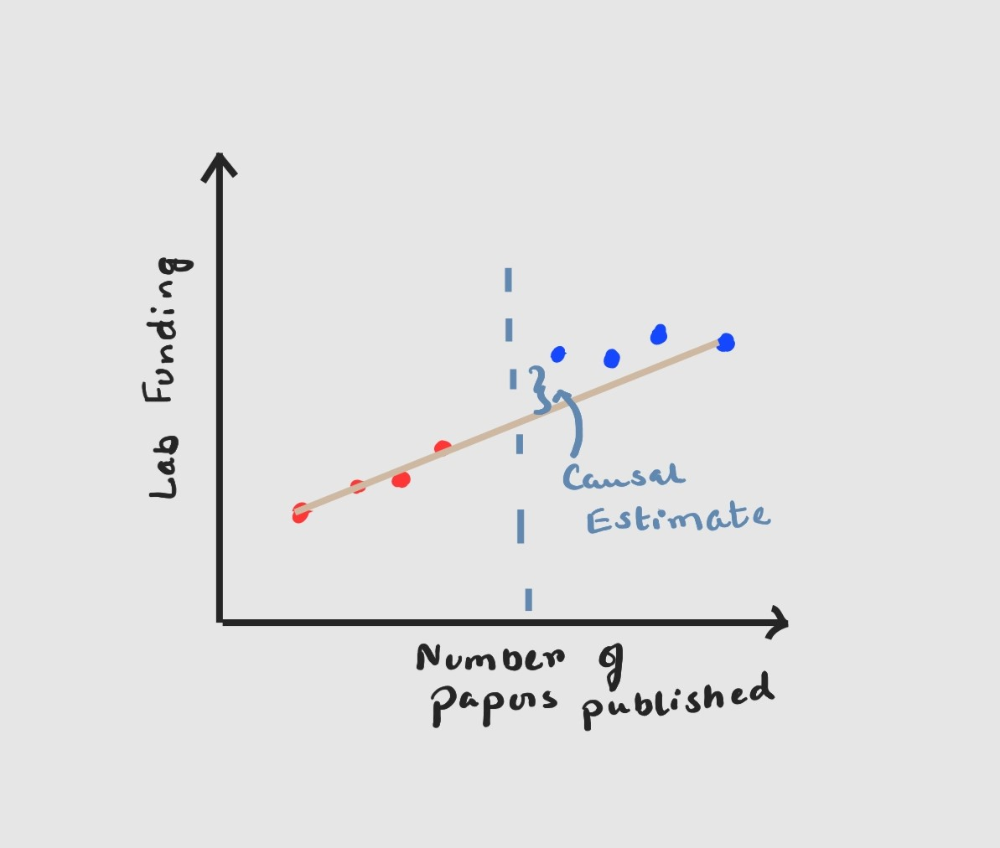
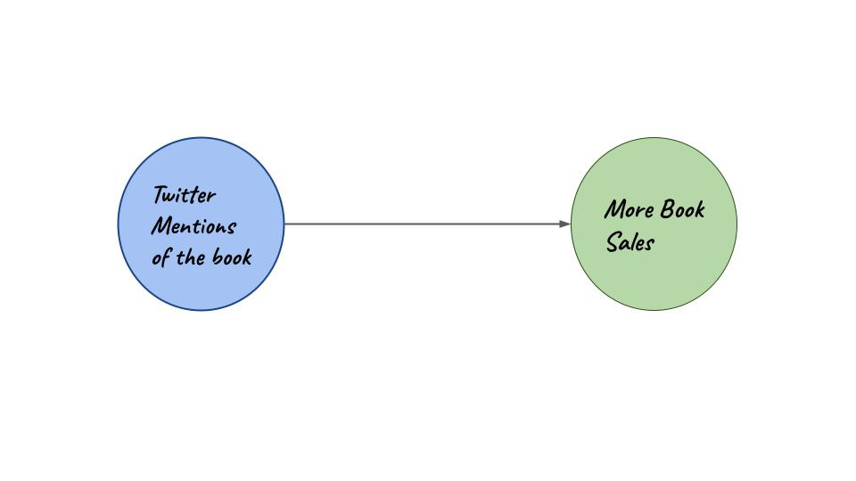
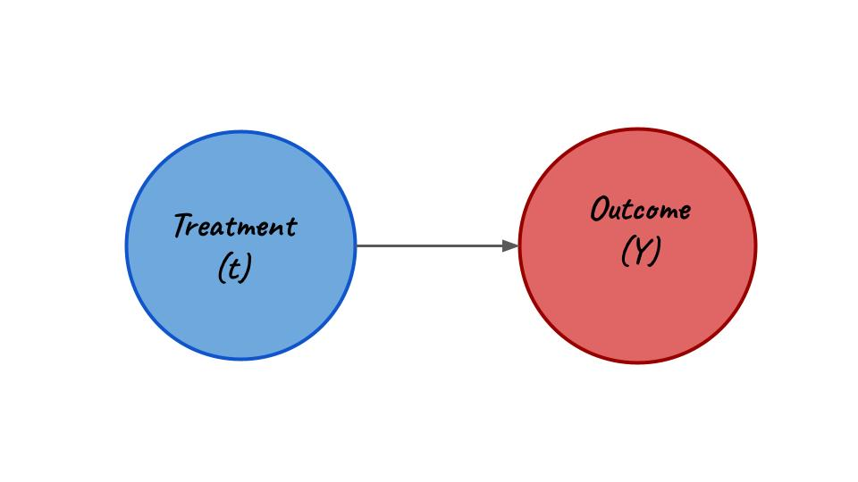
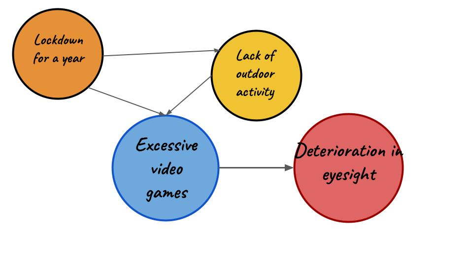

Studying Causality: The good, the bad, and the ugly.
Welcome back to Part 2 of The Causal Blog. The previous one was all about introducing Causality in the briefest way possible. You can find it right here.
Picking up where we left off let us revise what we learned in Part 1.
- Ignoring hidden causes in data can mean death for your model
- Counterfactual thinking is a must
- Randomization, Natural Experiments and Conditioning are the tools of the trade
Right. Now that we have got that sorted, let us start with those three vague terms. Randomization, natural experiments, and conditioning, what are they? How do we use them with our data and why do we need to care?
Well let us start scratching the list one item at a time.
Randomization
So what do we mean when we talk about Randomization in the context of Causality. Well at the very core of it causal knowledge, prefers intervention, in fact, it demands it. What do I mean by that?
In very simple terms if you say A causes B, you must be able to show to some degree that in the absence of A and all other parameters staying constant B will not occur.
Now that is a fairly straightforward statement but the implications go deeper. Say suppose you want to prove that ads by ads on Netflix will cause users to delete accounts. That’s a decent assumption, and you start trying to prove it. You remove the cause, (Netflix ads) and try to study the behavior of the user, but here’s the catch, you are not exactly studying user behavior. The other parameters are not kept constant. You are not looking at a parallel world where a doppelganger of the user is not shown an ad when they open Netflix.
This is exactly what randomization tries to solve. It basically tells us that in the context of our experiment (ads on Netflix) if we create a set of users and then randomly assign a user to a group (one group gets shown ads and the other group doesn’t) then we are essentially keeping the “other parameters” constant.

Two ways we can achieve randomization are:
- A/B testing
- Multi-armed bandits
A/B Test
This is exactly what we were talking about a second back. Create two groups of subjects (A & B group) and treat them differently (ads vs no ads) and see which one of the groups meets the target (cancellation of subscription). So in summary the steps to be followed are :
- Create two groups of subjects
- Expose each of the groups to two different experiments
- Find out which meets the target
The Causal Estimate (CE) for this methodology is the difference in outcome due to option 1 and option 2.
\[ CE = Y_{option1} - Y_{option2} \]
Check out how Netflix actually uses A/B testing in this video.
Multi-armed bandits
The second and a little less famous of the randomization strategy is multi-armed bandits. This methodology derives its name from the arms of slot machines. Historically, the infamous problem goes as such:
Given multiple slot machines, a gambler has to decide which arms to pull and how many times in order to maximize profit. Needless to say, countless have been slain by this problem, purely to quench their mathematical curiosity. 😉
This method relies on a very interesting strategy known as Explore & Exploit. Explore as in explore all possible options in the given context of the problem and Exploit as in figure out the best option and keep repeating it to maximize target outcome.
One example of this would if you had to figure out which Baskin Robbin’s ice cream would give you the maximum satisfaction (target outcome). The steps listed down below are some of the ways to carry out Exploration & Exploitation while maximizing satisfaction.

- Explore only. This basically means everyday you go to Baskin Robbins and select a new flavor and try it out and see if it gives you maximum satisfaction.
- Exploit only. On the first 10 days, you go to Baskin Robbins and try out 10 different flavors. From the 11th day, you keep buying that one flavor that gave you maximum satisfaction from those 10 previously tested ones.
- Epsilon - greedy.
- Strike a balance between explore an exploit
- Set an initial epsilon (indicator)
- Based on the value of epsilon (randomly picked) we will either explore or exploit.
- If we exploit, then we pick the best ice cream from already gathered data, if we explore then we randomly pick an ice cream from the counter.
- Epsilon - greedy.
\[ CE = Y_b - Y_c \]
- Use multi-armed bandits only and only if you have a good number of options to test.
The verdict?
Use Randomization even it means staying up a couple of nights and designing an experiment in which you have to create a parallel universe. In all seriousness, the two methods shown above actually gives us a good structure through which we can shape randomized experiments that give us a sense of causal direction.
Natural Experiments
Yep, randomization is hard and if there is absolutely no way for you to intervene, then that ship has sailed. So let us have a look at what the next best option is. Natural Experiments is a way to test causality by shaping naturally occurring phenomenon as an experiment. Its kind of like cheating but in a scientific way. 🤣
The two most prevalent ways to do this are as follows:
- Regression Discontinuity
- Instrumental Variables
Regression Discontinuity
Let us imagine that we are the top-secret evil society that controls the funding for academic labs. We want to check if granting more funds will cause an increase in lab performance, but there is a catch funding is also dependent on the number of papers published i.e. number of papers published will have to be above a certain threshold (theta) for the lab to qualify for funding.

\[ y = B_0 +B_1x +B_2(x>x_t)+e \]
Use the linear regression model to estimate the outcome however and this may be counter-intuitive if there is a discontinuous jump at the point where \(x =x_t\) or when your threshold is reached. The measure of this discontinuity is your Causal Estimate. If there is a small jump it means funding probably does not play a big role in lab performance and we can continue to be greedy evil super-villains. If the jump is huge enough, then we have got problems and might have to release some of our super-villain money as research grants.
Instrumental Variable
Before we dive deep into this particular let us revise some of the concepts we glided past previously.
Outcome Variable. This is a notation (almost always Y) used to denote the final outcome of our causal experiments.
Treatment Variable. This is another useful notation (almost always t) used to denote the treatment in our causal experiments. In the context of the Netflix ads problem t = showing ads on Netflix or t = not showing ads on Netflix.
Instrumental Variable = This is used to denote the variable which affects our outcome through our treatment variable. This variable does not have the scope to affect the outcome directly but influences the treatment variable and thereby indirectly affects the outcome.
Confused? Let’s take a look at an example:
Imagine we have now joined a publishing company as a data scientist. A strange rumor is abuzz in the marketing department. It is believed that more Twitter mentions will always cause more book sales. As data scientists only we can debunk or solidify this rumor.
 Graph for scenario 1
 Graph for scenario 2
Graph for scenario 2
Consider the following:
Let us try to model the two causal graphs shown above using simple regression equations. A list of notations is given below:
- \[bs_{orig}\] = Original figure for book sales.
- \[tm\] = Original number of twitter mentions.
- \[\hat{tm}\] = Generated number of twitter mentions from regression equations.
- \[bs\] = Generated number of book sales from regression equations.
- \[CE\] = Causal Estimate from the experiment
- The terms \[B_0\], \[B_1\], \[B_2\], \[B_3\], \[B_4\] and \[e\] are regression co-effecients and error terms.
Now let us see how a regression equation for the first figure will look like.
\[ bs_{orig} = B_0 + B_1(tm) + e \]
Now as author tweeting is going to be our instrumental variable let us frame a different regression equation.
\[ tm = B_1 + B_2(at)+e \]
\[B_o\], \[B_1\] and \[e\] is used through a method of least squares to generate \(\hat{tm}\). This is different from \(tm\) as this has been generated specifically using the variable of author tweeting excerpts. This \(\hat{tm}\) will now be used in anothe regression equation to generate the new figure for book sales.
\[ bs = B_3 + B_4(\hat{tm}) + e \]
\[ CE = bs - bs_{orig} \]
The verdict?
If you have a scenario like the ones we presented and there are naturally occurring experiments like academic grants for labs above a certain threshold and author tweeting excerpts from their books, do go for methodologies that leverage these occurrences. This will always give us a better edge and in the end present a better rounded picture of cause and effect.
Observational Data
Now comes the hard part. You can’t intervene and create randomized experiments. You can’t find occurences in your data that qualify as natural experiments. All you are left with cold hard observational data from 2 years back. This is the most explored and most complex part of causal analysis.
TLDR;
You are doomed.
Largely speaking to estimate causality from observational data only there are 3 major steps.
- Assume a graphical model
- Make stratifications (different groups)
- Compare the treatment across stratifications
How do we do this? Again we have 2 strategies that are quite failproof and widely used.
- A lot of these methods are more theoretical, which means you’ll probably have to spend more time with a notebook figuring out all the variables before jumping into code/math.
Backdoor Criterion
Block all the backdoor paths i.e. block all the non-causal associations and study the final outcome based on the treatment. So what is a backdoor criterion again?
A set of variables W satisfies the backdoor criteria if the following are true:
- W blocks all the backdoor paths from treatment (t) to outcome (Y)
- W does not contain any descendants of treatment (t).
Wait, so what is a backdoor?
Well there are a lot of mathematical jargon available to define it but the general thumb-rule is
Arrows pointing away from treatment (t) are front doors.
Arrows pointing towards treatment (t) are backdoors.
 Graph with only frontdoor
 Graph with both front door and backdoor
Graph with both front door and backdoor
Now if we simply hold W or any other variable like W which is on a backdoor path as constant we will effectively close that backdoor path. Allowing us to measure the effect of treatment (t) on the outcome (Y).
Test 1:
Let’s try a little test of knowledge shall we? Given the graphical model down below, explain how you’ll use Backdoor Criterion to estimate causal effect. You can write your explanation in the comments.

Propensity Score Matching
This is another strategy that proves really useful when finding out causal effects from observational data. The steps to perform Propensity Score Matching are a bit complicated, but let’s break them down into chunks. We will also use an example to better understand the strategy.
Let us suppose we are a multi-national bank and we are trying to find out if winning a lottery causes people to invest more into stocks.

- First, we find the propensity score i.e. the probability/likelihood that the individual receives a certain treatment. In the above example, this will be the probability that a certain individual wins the lottery.
- Match the individuals that have matching propensity scores. If we have a matching probability score of two individuals then we match them together. Nearest neighbor matching and greedy optimal matching are some of the techniques.
- Verify the quality of matches. So if two individuals having a similar chance of winning a lottery is matched, we verify the matching using statistical methods. These methods are t-test, standardized bias and can also be done using graphical representations.
- Outcome Analysis. Check how many of those matches(groups) won the lottery. In this step we try to find the mean outcome across matches and study the trend. This gives us an estimate of the causal effect over a number of groups.
The verdict?
This is the toughest of the lot. Remember causal connections are heavily dependent on counterfactual thinking but shaping existing data and conditioning on particular parameters and variables to prove a hypotheses can be a tiresome and sometimes thankless job.
Final Thoughts
I realize this was quite bigger than I promised. My hope was to provide a sense of the various methodologies and examples in one place so that it can be used as a reference in times of need. From the next blog onwards we will focus on each of these segments and try to look at some examples and notebooks (python codes) to understand causality. If you have any constructive feedback do let me know in the comments.